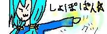
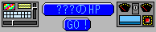

| サイト | 説明 | 管理者名 |
|---|
| |
オリカビの漫画などを描かれております。
スーパー正男やWWAなどもあります。
Flashなんかも公開されていて、クオリティも良好です。
2009/09/02 移転確認。リンク先変更済。 |
ねこ(ニュータイプ) 様 |
|
| 掲示板でのイラストの評価や大会が中心です。
とても素晴らしいオリキャラのイラストの展示もあります！
１度は訪れてみることをオススメします。 |
神零翠覇様 |
| 
| 敵Ａ「ククク・・・ヒラリラーがやられたか・・・」
敵Ｂ「まあいい・・奴は四天王の中でも最弱・・・」
敵Ｃ「我ら四天王の恐ろしさをおもいしらせてやるわ！」
果たして勇者ショボリーナは勝つことが出来るのかっ！？
続きはこのサイトでぇっ！ |
卵掛け・甘酢ドラグーン・ショボリーナー |

| むにむにやPSP用のカスタムテーマなどを配布しています。
ＲＰＧツクール2000で製作中の「ＤＩＧＩＴＡＬ ＳＴＯＲＹ」
というゲームも期待！シンプルなデザインや、
Flashでつくられたタイトル領域が見る者を惹きつけます。
2009/09/12 移転確認。リンク先変更済。 |
みどりぃ様 |
 |
当サイト常連の方のＨＰです。
メインコンテンツの「惑星アイゼルト」を始め様々なゲームや掲示板が置かれています。 |
ヴァルテイン様 |
 |
ＧＩＦアニメが中心のサイトです。ツクールXPのゲームもありますが、ゲームとは呼べなさそうな不思議な世界が待ち受けます。 |
ペッカー様 |

| とてつもなく広い迷宮を探索するアドベンチャーゲーム。
全て合わせると２５種類のエンディングが存在。要望があればクリアへのヒントをこっそり渡します。 |
ex328様 |
 |
ＣＧＩゲーム「Blind Justice（ジェラスト島）」等が設置されている、
美しいデザインのサイトです。他にもＴＯＷＮなどがあります。 |
ジェラスト様 |
| 憩いの国 セルーム国 |
ヒラリラーがWWAの技術提供を行った相手の一人
のクニナカ氏のサイト。WWAのほか、小説もあります。 |
クニナカ |
 |
管理人まさぴー氏が運営するＨＰで、Flashやページ構成は
なかなかのものです。クイズなどがあります。 |
まさぴー様 |
 |
すごいジャンルの豊富な正男があります、そのほかにも漫画やＧＩＦアニメや小説を置いてある図書館があります！
相互リンク集故障の影響で現在は片道になっております。過去は相互でした。 |
クーリア様 |
 |
ＴＯＷＮ「Town life」が主なコンテンツです。他にもタウン改造スクリプトなどを配布しています。 |
幻様 |
 |
ここの管理者様は一時荒らし行為で騒がれましたが、もうすっかり反省した模様です。
WWAや正男があります。 |
嗚呼嗚呼様 |
| 御剣のHP |
かつての同級生のサイト。ＦＦが大好きなのでそこらへんの話するとすごく喜ばれますよ。 |
御剣様 |
|  |
サーバー移転してパワーアップしたようです。
正男などがありますよ！ |
???様 |